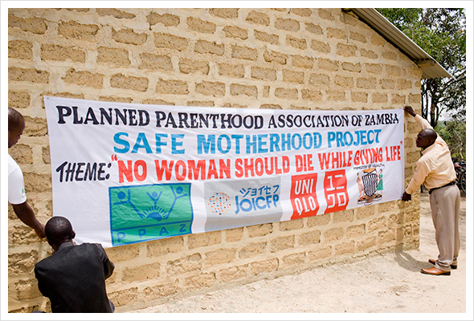
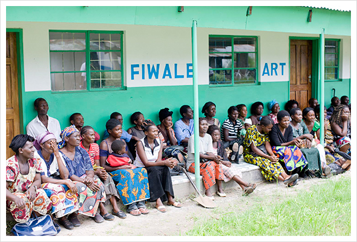
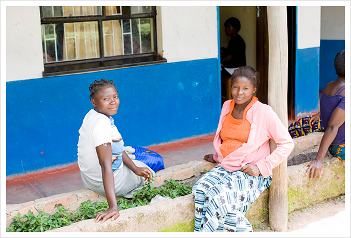
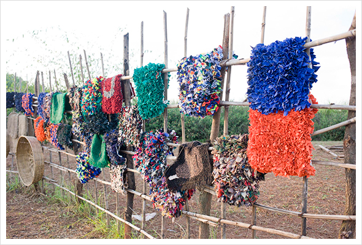

- 
- 41.
- 地域の住人が自分たちの力でより良い生活を営めるようにサポートするということ。JOICEPが、現地NGOのPPAZを通じた支援を行っている理由はそこにある。
（写真：セレモニーにはられた横断幕）
- 
- 42.
- 保健推進員の人々。建設中の出産待機ハウスは、現地の人のボランティアで作られている。村をまわって診療に行くことを勧める保健推進員も、基本的にはボランティア。地域社会の中で、役割を果たすことで満たされる個人を育むことが大切なのだという。
（写真：保健推進員の人々）
- 
- 43.
- つまり、人々の意識を変えること。それが現状を変えるために最も重要なんだ、ということ。
- 
- 44.
- 最後に。主要道路沿いの露天で、衣服の最終系（？）を発見！切り刻んだ布で作られたマット。今回贈られたユニクロの衣服の最後を想像してみた。